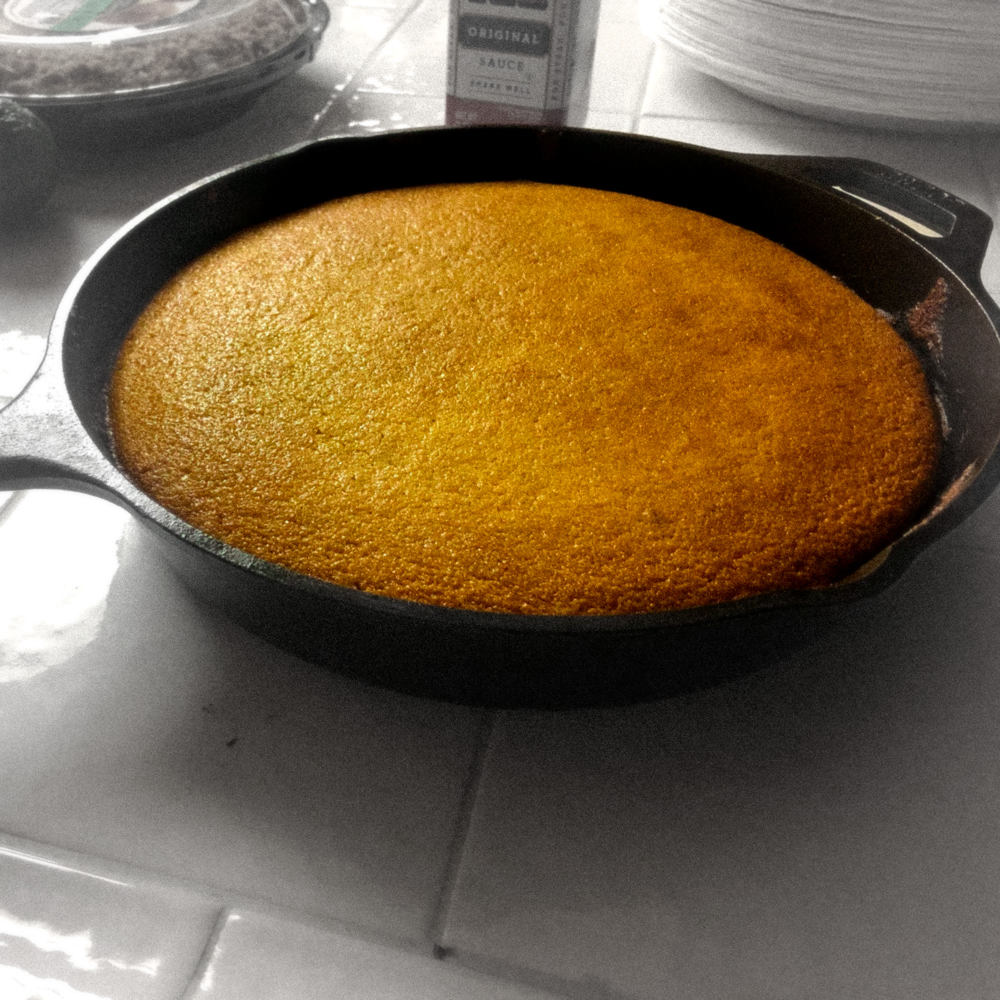

Buttermilk Cornbread
Home

Description
You've got to try The Best Buttermilk Cornbread-it's moist, tender, and perfectly sweet. It's so good, it vanishes within minutes!
Ingredients
- 1 tbsp shortening
- 8 tbps unsalted butter - melted
- 1/2 cup granulated sugar
- 1/4 cup honey
- 2 eggs - room temperature
- 1 cup buttermilk - room temperature
- 1 cup all purpose flour
- cornmeal
- 1/2 tsp salt
- 1/2 teaspoon baking soda
- 1/4 tsp ground cinnamon
For the Topping
Directions
Add 1 tbsp of shortening to a 10" cast iron pan
Preheat oven to 425°F and place the pan in the oven on the center rack
- In a large mixing bowl, combine the melted butter, sugar, and honey. Whisk in the eggs one at a time, beating until mixture is smooth. Add the buttermilk and mix to combine.
- In a medium mixing bowl, whisk together the flour, cornmeal, salt, ground cinnamon, and baking soda. Gradually add the dry ingredients to the wet ingredients, stirring with a spatula until only a few lumps remain. Allow the batter to sit for 3 minutes.
- Carefully remove the cast iron pan from the oven and pour the batter into the prepared pan, smoothing the top with the spatula to create an even layer.
- Bake for 20 minutes, checking after 15 to make sure the top isn't browning too much. You may need to place a piece of foil over the top to prevent browning.
- Check with toothpick to ensure the batter is fully cooked, only a few crumbs should remain when inserted into the center. Once it's fully cooked evenly spread 1/2 tbps of unsalted butter across the top.